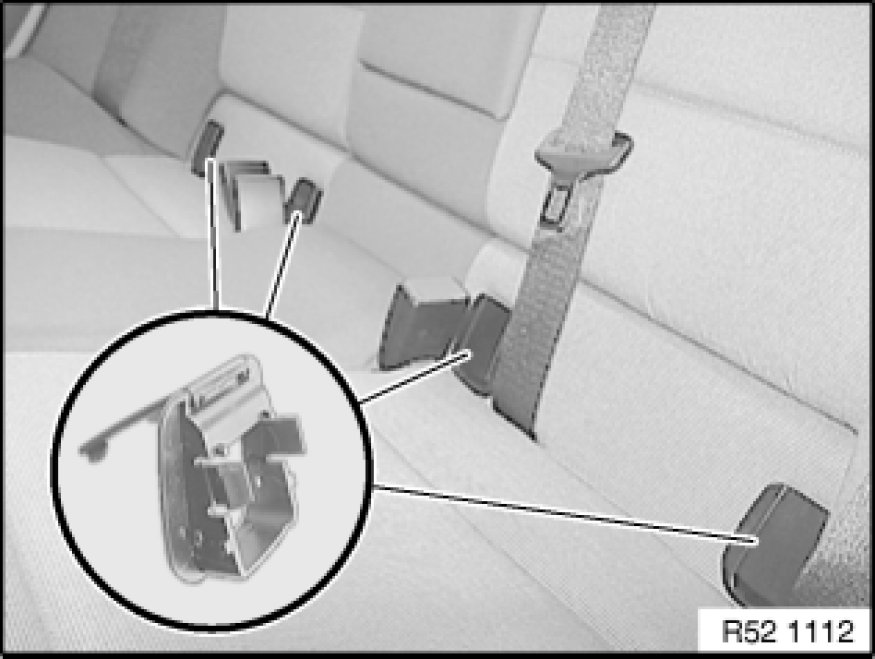
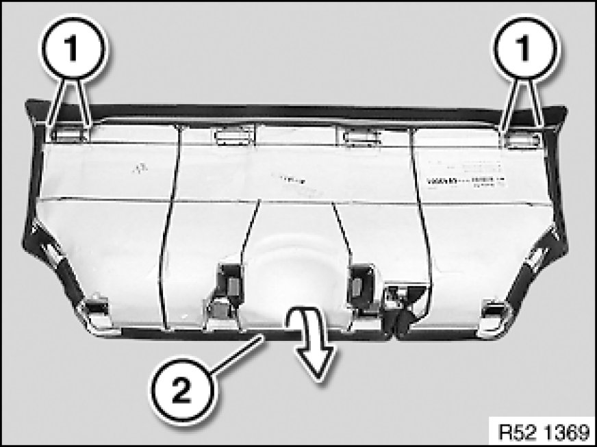
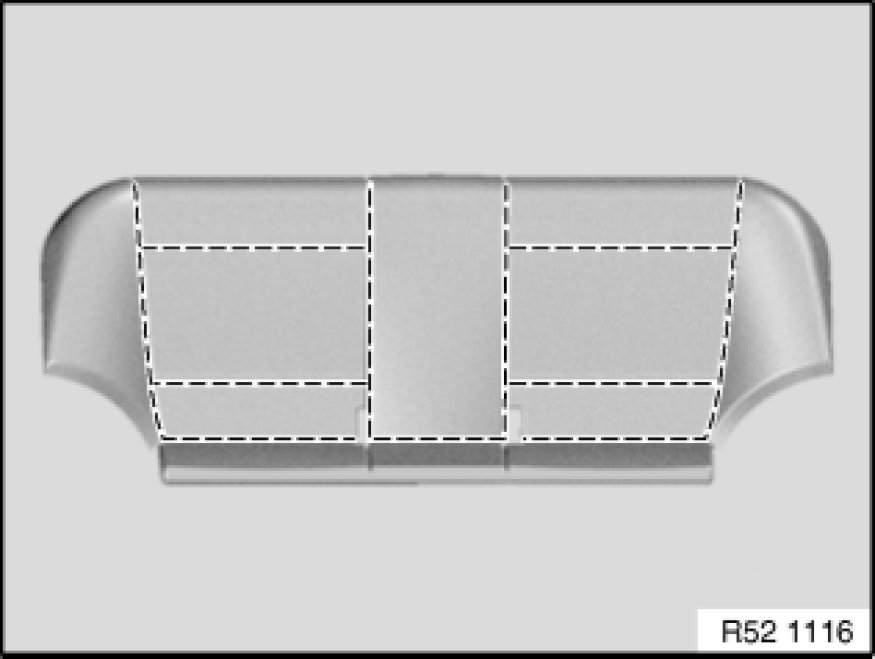
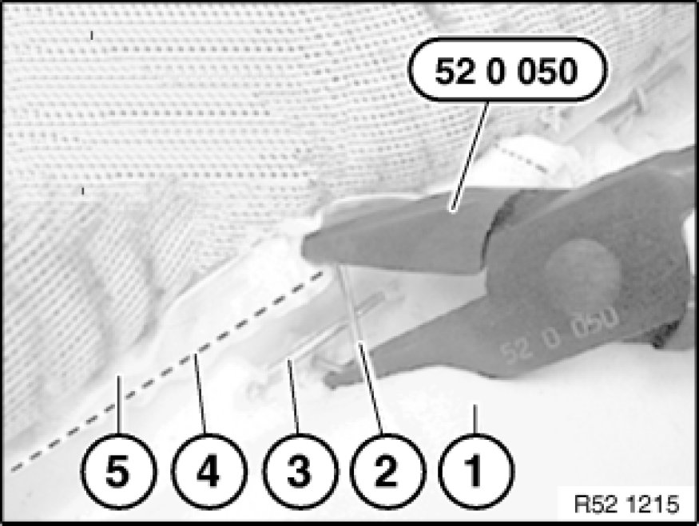
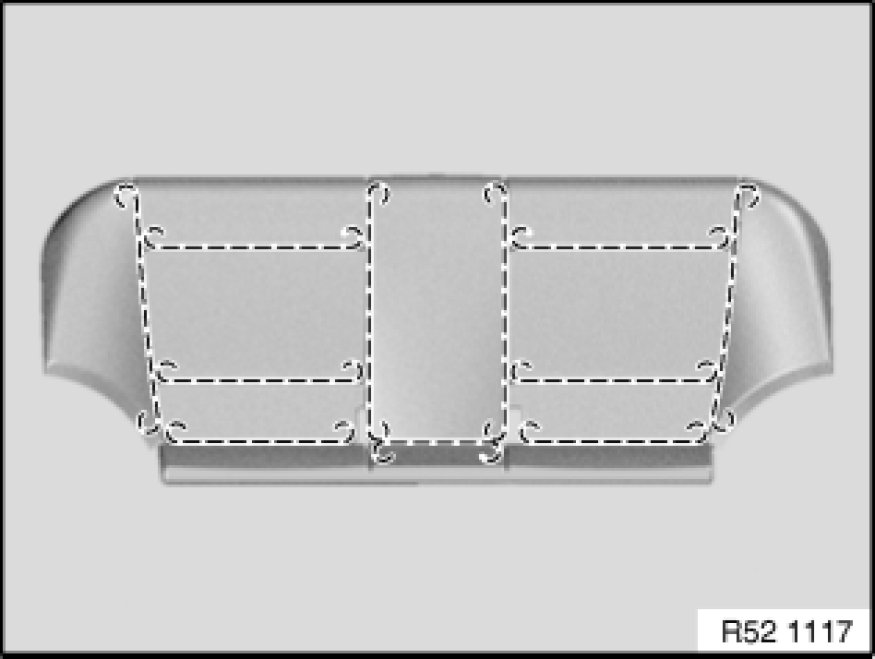

Replacing Seat Cover for Rear Seat
52 26 400 - Replacing seat cover for rear seat

Special tools required:
- 52 0 050 52 0 050 Pliers

Necessary preliminary tasks:
- Remove rear seat Removing and Installing / Replacing Rear Seat
- If necessary, remove storage tray Removing and Installing/Replacing Rear Seat Storage Tray.

Unclip Isofix protective caps.
Installation:
Make sure Isofix protective caps are correctly engaged.

Loosen retainers (1).
Lift out welt (2) from wire frame.

Detaching cover and padding:
- Release all retainers in marked area
- Remove seat cover from padding
- Remove remaining retainers from cover and padding

Installation:
Insert new retainer (2) with special tool 52 0 050 52 0 050 Pliers and bend closed.
1. Padding
2. Retainer
3. Trim wire in padding
4. Trim wire in seat cover
5. Seat cover

Replacing cover:
- Pull all trim wires out of seat cover
- If necessary, cut in take-up for trim wires of new cover
- Push trim wires into new seat cover